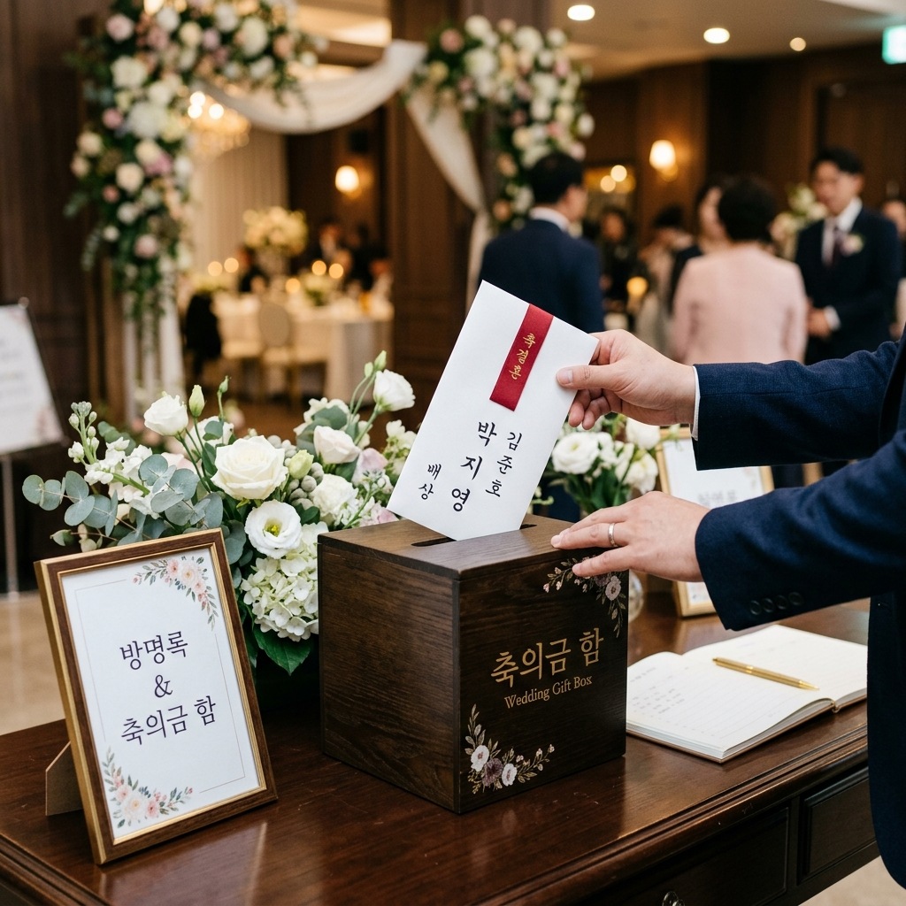
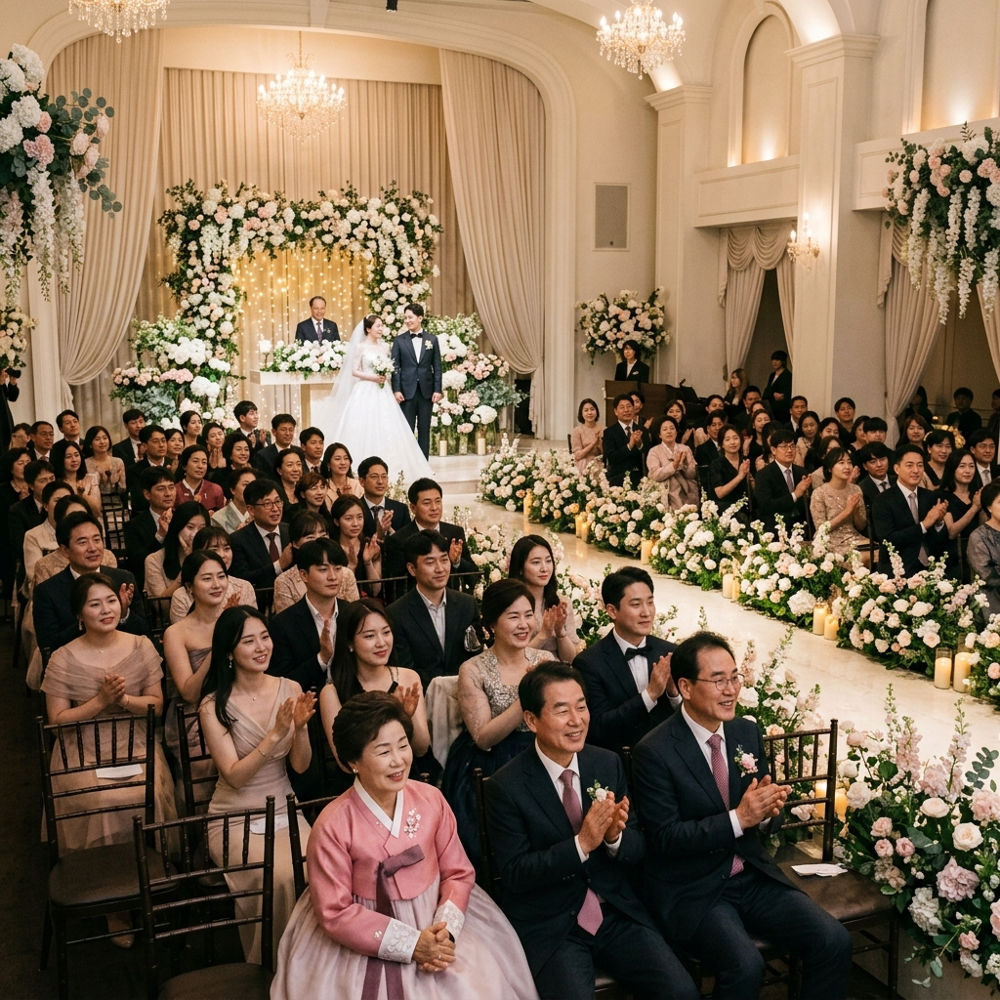
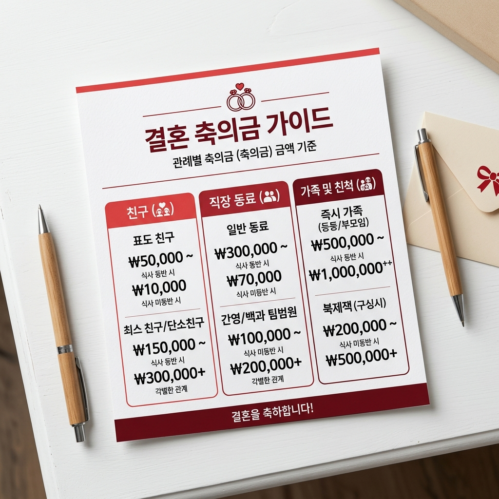

결혼식 축의금을 앞두고 '얼마를 내야 하지?'라는 질문은 누구나 한 번쯤 해봤을 것입니다.
축의금에는 법적으로 정해진 금액이 없습니다. 지역 관습, 연령대, 관계의 밀접도, 결혼식 규모 등에 따라 차이가 나는 사회적 관례입니다.
한국에서는 통상적으로 5만 원 단위로 축의금을 결정하는 경우가 많으며, 최근에는 물가 상승과 함께 평균 금액도 조금씩 올라가는 추세입니다.
중요한 것은 관계에 맞는 성의를 표하는 것이지, 과도하게 많거나 적어 어색함을 남기지 않는 것입니다.
이 글에서 제시하는 금액은 어디까지나 통상적인 참고 범위이며, 같은 관계라도 개인 사정과 지역에 따라 다를 수 있습니다.
경제적 여유가 부족한 상황이라면, 마음을 담은 진심 어린 말 한 마디와 함께 소박한 금액도 충분히 예의 바른 축하가 됩니다.
반대로 오랜 친구이거나 각별한 관계라면 금액을 넉넉히 하여 마음을 표현하는 것도 좋습니다.

오랫동안 친하게 지내온 친구 결혼식이라면 어느 관계보다 고민이 많아지는 경우가 많습니다.
일반적으로 친한 친구 결혼식에는 10만 원 ~ 20만 원이 가장 흔한 통상 범위입니다.
오랜 친구, 절친한 친구, 서로 결혼식에 참석하기로 한 사이라면 20만 원 ~ 30만 원 이상을 내는 경우도 드물지 않습니다.
학창 시절 친구이지만 졸업 이후 자주 보지 않은 경우라면 10만 원이 부담 없는 선택입니다.
그룹으로 공동 봉투를 내는 경우, 1인당 5만 원씩 모아 합산 금액을 한 봉투에 담는 방식도 흔합니다.
친구들 사이에서는 '얼마 냈어?'라는 이야기가 돌기 마련이므로, 같은 그룹 내 금액이 너무 차이 나지 않게 조율하는 것도 배려입니다.
신부와 신랑 양쪽 모두와 친한 경우라면, 두 사람의 관계를 고려해 한 봉투로 낼지 두 봉투로 낼지 상의해 보세요.
직장 관계에서의 축의금은 '회사 문화'와 '사내 분위기'가 크게 영향을 미칩니다.
일반 직장 동료(같은 팀·부서)라면 5만 원 ~ 10만 원이 가장 많이 선택되는 범위입니다.
직장 상사의 결혼식에 초대받았거나 관계가 각별하다면 10만 원 ~ 15만 원을 내는 경우가 많습니다.
부하직원 결혼식에 상사로서 참석하는 경우도 10만 원 ~ 20만 원으로 성의 있게 표현하는 사람들이 많습니다.
팀 단위로 공동 봉투를 모으는 관행이 있는 직장이라면, 개인 봉투 없이 단체 봉투만 내는 것이 일반적입니다.
점심을 함께 먹는 정도의 가벼운 지인 관계라면 5만 원이 무난한 선택입니다.
직장 내 축의금 문화는 회사마다 크게 다를 수 있으므로, 선배나 같은 팀 동료에게 '보통 얼마씩 하나요?'라고 자연스럽게 물어보는 것도 좋은 방법입니다.
| 관계 | 통상 금액대 (참고) | 비고 |
|---|---|---|
| 가벼운 지인·회사 동료 | 5만 원 | 참석 시 식사비 포함 고려 |
| 직장 동료 (같은 팀) | 5만 원 ~ 10만 원 | 팀 공동 봉투 관행 확인 |
| 친한 직장 동료·상사 | 10만 원 ~ 15만 원 | 관계 깊이에 따라 조정 |
| 친한 친구 (자주 보는 사이) | 10만 원 ~ 20만 원 | 각별하면 20만~30만원+ |
| 가족·친척 (사촌 이내) | 30만 원 이상 | 부모·형제는 50만~100만원+ |
| 불참 시 (계좌이체) | 3만 원 ~ 5만 원 | 참석 금액의 절반 이하도 무방 |
가족과 친척 사이의 축의금은 직장·친구 관계보다 훨씬 큰 금액이 통상적으로 오갑니다.
사촌 형제자매 결혼이라면 30만 원 ~ 50만 원이 일반적인 범위입니다.
조카나 남매·형제자매 결혼에는 50만 원 ~ 100만 원 이상을 내는 경우가 많으며, 부모님과 함께 봉투를 합산해 내는 경우도 있습니다.
삼촌·이모·고모 등 방계 친척의 결혼이라면 관계 친밀도에 따라 20만 원 ~ 50만 원으로 조정됩니다.
경조사는 가족 간 신뢰와 결속을 확인하는 자리이기도 하므로, 형편이 된다면 넉넉하게 하는 것이 기분 좋은 관계를 이어나가는 방법이 되기도 합니다.
단, 경제적 상황이 여의치 않다면 솔직하게 형편에 맞는 금액을 내는 것이 오히려 더 진정성 있습니다.
명심할 것은 금액 자체보다 직접 참석해 축하의 마음을 전하는 것이 훨씬 중요하다는 점입니다.

결혼식에 참석하면 식사비(뷔페·식사 비용)가 포함된 금액을 내는 것이 예의입니다.
현재 결혼식 뷔페 식사 비용은 인당 5만 원 내외인 경우가 많습니다. 따라서 참석 시 최소 5만 원은 넘기는 것이 일반적입니다.
불참 시에는 참석 시보다 적은 금액을 내도 무방합니다. 보통 3만 원 ~ 5만 원이 적당하며, 관계가 가까울수록 참석 금액의 50~70% 수준을 내는 경우가 많습니다.
불참하면서 아무 축하도 하지 않는 것보다는 계좌이체나 소액 봉투라도 전달하는 것이 관계를 이어나가는 데 중요합니다.
갑자기 참석이 어려워진 경우라면 미리 신랑·신부 혹은 가족에게 상황을 알리고, 청첩장에 적힌 계좌로 이체하는 것이 깔끔합니다.
온라인 축하 메시지와 함께 계좌 이체를 보내면 더욱 진심이 전해집니다.
반면 정말 친한 친구나 가족이라면, 불참하더라도 참석 시와 크게 다르지 않은 금액을 보내는 경우도 있습니다.
축의금 금액은 지역과 세대에 따라 편차가 상당히 클 수 있습니다.
수도권(서울·경기·인천) 지역의 경우 평균 축의금이 상대적으로 높은 편이고, 지방 소도시나 농촌 지역은 다소 낮은 경향이 있습니다.
경남, 경북, 전라 지역 등 지방에서는 5만 원이 여전히 일반적인 친구 범위 금액으로 통하는 경우도 있습니다.
세대별로는 2030세대에서 10만 원이 기준점이 되어가는 반면, 기성세대에서는 3만 원 ~ 5만 원도 충분히 예의 있는 금액으로 인식하는 경향이 있습니다.
같은 지역이라도 상류층이 많은 동네에서 열리는 결혼식은 주변인들이 내는 금액대가 더 높게 형성될 수 있습니다.
가장 현실적인 방법은 같은 관계군의 지인에게 통상 금액을 물어보는 것이며, 이것이 가장 정확한 현지 기준이 됩니다.
결국 중요한 것은 금액의 많고 적음보다, 진심으로 축하하는 마음이 전달되는 것임을 기억하세요.
결혼 축의금 봉투는 흰색 봉투에 겉면에 이름을 쓰는 것이 일반적입니다.
봉투 앞면에는 祝結婚(축결혼), 祝 御結婚(축 어결혼), 또는 한글로 결혼을 축하드립니다라고 쓰고, 봉투 뒷면 왼쪽 하단에 자신의 이름을 씁니다.
시중에서 판매하는 봉투에는 이미 '祝結婚' 문구가 인쇄된 것도 있어 이를 활용하면 편리합니다.
금액은 내지(봉투 안 종이)가 있는 경우 내지에 금 ○만 원 정(整)이라고 적거나, 그냥 현금만 넣기도 합니다.
금액을 내지에 적을 때는 한자(壹, 萬 등)를 쓰기도 하지만, 아라비아 숫자로 써도 무방합니다.
봉투를 제출할 때는 부조함(봉투함)에 직접 넣거나, 축의금을 받는 접수처 담당자에게 직접 전달합니다.
직접 받는 경우 방명록에 이름과 금액을 적게 되므로, 봉투에 이름을 또 적지 않아도 되는 경우도 있습니다.

요즘은 직접 참석하지 못하거나 청첩장을 카톡·문자로 받은 경우, 계좌이체로 축의금을 보내는 것이 자연스러워졌습니다.
이체 시 입금자명을 자신의 이름으로 설정하는 것이 기본이며, 메모란에 "결혼 진심으로 축하해!" 같은 짧은 메시지를 추가하면 더욱 따뜻하게 전달됩니다.
이체 후에는 카카오톡이나 문자로 "방금 축의금 보냈어, 정말 행복하게 살아!"처럼 직접 연락을 드리는 것이 예의입니다.
입금 전에 계좌번호는 반드시 다시 한번 확인하세요. 착오 송금이 발생하면 돌려받는 절차가 복잡할 수 있습니다.
지인의 SNS나 온라인 청첩장을 통해 안내된 계좌번호를 사용하는 것이 가장 안전합니다.
이체 금액이 큰 경우(50만 원 이상) 보안 OTP 인증을 요구하는 은행도 있으니 미리 확인하세요.
온라인 청첩장 서비스(모바일청첩장 플랫폼 등)에서는 내장된 축의금 기능을 통해 직접 이체할 수 있는 편리한 서비스도 제공하고 있습니다.
최근 젊은 세대 사이에서는 현금 축의금 대신 신혼부부가 원하는 선물로 마음을 전하는 문화도 조금씩 자리 잡고 있습니다.
결혼 전 신혼부부가 직접 등록한 '위시 리스트'나 '선물하기' 링크를 공유하는 경우도 있으며, 이 경우 신랑·신부가 진심으로 원하는 물건을 선물하게 되어 실용적입니다.
단, 선물은 신랑·신부가 원한다는 명확한 신호가 있을 때만 대체하는 것이 원칙입니다. 확인 없이 일방적으로 선물을 보내면 당황스러울 수 있습니다.
일부 하객은 상품권(백화점·쇼핑몰 상품권)을 전달하기도 하며, 이는 현금의 실용성과 선물의 특별함을 동시에 지닙니다.
여전히 대다수의 경우에는 현금 봉투가 가장 보편적이고 실용적인 선택임을 기억하세요.
결혼식 자체가 비용이 많이 드는 만큼, 신혼부부에게 현금은 가장 직접적인 도움이 됩니다.
어떤 방식이든 진심을 담은 축하가 가장 중요합니다.
Q. 축의금은 홀수 금액이 좋다는데 맞나요?
A. 홀수가 좋다는 이야기는 주로 기제사나 부조금(조의금)에 관한 관습에서 비롯된 오해입니다. 결혼 축의금에서는 5만, 10만, 20만 원처럼 깔끔한 금액이면 충분합니다.
Q. 축의금 봉투를 현장에서 구입해도 되나요?
A. 네, 결혼식장 인근 편의점이나 문구점에서 봉투를 쉽게 구입할 수 있으며, 식장 입구에 봉투가 비치된 곳도 있습니다.
Q. 결혼식에 두 부부가 같이 참석하면 두 배로 내야 하나요?
A. 반드시 그렇지는 않습니다. 한 봉투로 내되 금액을 조금 더 올리는 방식이 일반적입니다. 두 사람이 각각 내고 싶다면 그것도 괜찮습니다.
Q. 카카오톡 청첩장을 받았는데 축의금을 내야 하나요?
A. 참석 여부와 관계의 밀접도에 따라 다릅니다. 가까운 사이라면 불참해도 계좌이체로 최소한의 성의를 표하는 것이 좋고, 가벼운 지인 수준이라면 안 내도 결례가 아닙니다.
Q. 주례 없는 결혼식, 야외 결혼식에서도 축의금 관례가 같나요?
A. 기본 예절은 동일합니다. 다만 소규모 친밀한 결혼식은 금액 부담이 상대적으로 낮게 형성되는 경향이 있습니다.